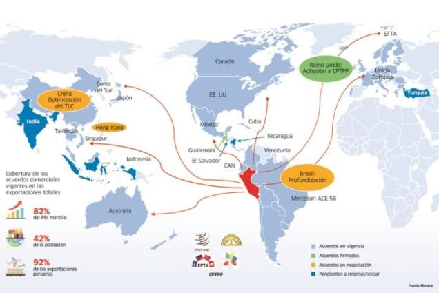
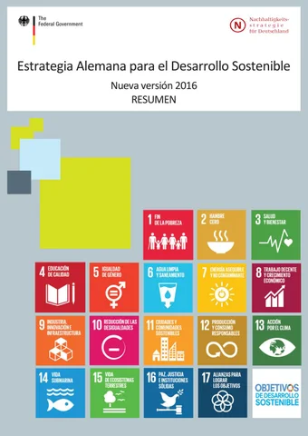

Aranceles de Comercio Exterior
Los aranceles vinculados a la certificación de exportaciones en Alemania están especificados en las siguientes resoluciones:
- Reglamento de la Unión Europea sobre aranceles
- Ley de Comercio Exterior de Alemania
- Acuerdos de Libre Comercio de la UE
Aranceles en Alemania
Alemania aplica distintos tipos de aranceles según el origen del producto y los acuerdos comerciales. A continuación, se detallan algunos aspectos importantes:
- Arancel Externo Común (AEC): Rango de 0% a 19% dependiendo del tipo de mercancía.
- IVA e Impuestos Internos: Algunos productos tienen un IVA adicional que puede variar entre el 7% y el 19%.
- Acuerdos Comerciales: Alemania tiene tratados con varios países que pueden reducir o eliminar aranceles.
- Regímenes de Importación: Existen licencias automáticas y no automáticas según el tipo de producto.
- Excepciones: Algunos productos pueden estar exentos de aranceles bajo ciertas condiciones.
Comercio Exterior - Datos Clave
| Clientes Principales (% de exportaciones) - 2023 | Proveedores Principales (% de importaciones) - 2023 |
|---|---|
| Francia - 12.0% | Países Bajos - 18.0% |
| Estados Unidos - 9.5% | China - 16.5% |
| Reino Unido - 8.0% | Francia - 10.0% |
| Italia - 7.0% | Italia - 8.0% |
| Otros - 63.5% | Otros - 47.5% |
Productos Principales
| Exportaciones - 70.0 miles de mills. USD (2023) | Importaciones - 75.0 miles de mills. USD (2023) |
|---|---|
| Maquinaria - 15.0% | Maquinaria - 10.0% |
| Automóviles - 12.0% | Productos químicos - 8.0% |
| Productos farmacéuticos - 10.0% | Electrónica - 7.0% |
| Vinos - 5.0% | Alimentos - 6.0% |
| Otros - 48.0% | Otros - 69.0% |
Fuente: Comtrade, últimos datos disponibles
Participantes en Comercio Exterior
| Categoría | Información |
|---|---|
| Zonas Francas y Economía Especial de Exportación | |
| Contactos | Lista de contactos de empresas dentro de Zonas Francas, facilitando la conexión entre importadores y exportadores. Ejemplos incluyen empresas de logística y distribución. |
| Competitividad y Desempeño | Evaluaciones sobre la competitividad de las Zonas Francas, incluyendo análisis de costos, beneficios fiscales y tiempos de despacho. |
| Servicios Legales | |
| Contactos | Directorio de asesores legales especializados en comercio exterior, que ofrecen asesoría en regulaciones y normativas, así como en la redacción de contratos internacionales. |
| Desempeño | Ranking de bufetes especializados en comercio internacional, evaluando su experiencia, casos de éxito y satisfacción del cliente. |
| Agentes de Carga | |
| Costos | Análisis de tarifas de transporte de carga, incluyendo comparativas entre diferentes modalidades de transporte (aéreo, marítimo y terrestre). |
| Desempeño | Comparativa de servicios de carga, destacando la eficiencia, tiempos de entrega y satisfacción del cliente. |
| Agentes de Aduana | |
| Costos | Costos asociados a los servicios de agentes de aduana, incluyendo tarifas por servicios de despacho y asesoría. |
| Desempeño | Evaluación del desempeño de los agentes de aduana en términos de rapidez y efectividad en el despacho de mercancías. |
| Transportistas | |
| Costos | Costos de transporte terrestre, aéreo y marítimo, incluyendo tarifas por kilómetro y costos de combustible. |
| Desempeño | Evaluación de la puntualidad y confiabilidad de los transportistas en la entrega de mercancías. |
| Puertos | |
| Costos | Costos de operación en puertos, incluyendo tarifas de carga y descarga, y costos de almacenamiento. |
| Desempeño | Evaluación de la eficiencia operativa de los puertos, tiempos de espera y capacidad de manejo de carga. |
| Operador Portuario | Información sobre los principales operadores portuarios en Alemania y sus capacidades. |
| Aeropuertos | |
| Costos | Costos de operación en aeropuertos, incluyendo tarifas de carga y descarga, y costos de servicios aeroportuarios. |
| Desempeño | Evaluación de la eficiencia operativa de los aeropuertos, tiempos de espera y capacidad de manejo de carga aérea. |
| Operador Aeroportuario | Información sobre los principales operadores aeroportuarios en Alemania y sus capacidades. |
| Empresas de Intermediación Financiera | |
| Contactos | Lista de contactos de empresas de intermediación financiera que facilitan el comercio exterior, incluyendo bancos y casas de cambio. |
| Desempeño | Evaluación de la eficiencia y confiabilidad de las empresas de intermediación financiera en el manejo de transacciones internacionales. |
| Empresas de Seguros | |
| Contactos | Directorio de empresas de seguros que ofrecen pólizas para comercio exterior, incluyendo seguros de carga y responsabilidad civil. |
| Desempeño | Evaluación de la calidad del servicio y la satisfacción del cliente en las empresas de seguros. |
📊 Gráficas y Estadísticas

Gráfica que muestra las tendencias de exportaciones en los últimos años.

Gráfica que muestra las tendencias de importaciones en los últimos años.
🏢 Entidades Reguladoras
- Bundeszollverwaltung: Controla impuestos y regulaciones aduaneras, asegurando el cumplimiento de las normativas fiscales.
- Banco Federal de Alemania: Regula pagos internacionales y acceso a divisas, facilitando el comercio exterior.
📦 Infraestructura y Logística
- Puertos y Aeropuertos: Infraestructura clave para el comercio, incluyendo el Puerto de Hamburgo y el Aeropuerto de Frankfurt.
- Zonas Francas: Espacios con beneficios fiscales que permiten la importación y exportación sin aranceles.
- Empresas de Transporte: Encargadas del movimiento de mercancías, incluyendo empresas de logística y courier.


Noticias
Titulares Recientes
Reforma Fiscal en Alemania
Nuevas medidas para fomentar la inversión extranjera.
Acuerdo Comercial con la UE
Se espera que genere nuevas oportunidades de negocio.
Crecimiento del PIB
Proyecciones positivas para el 2025 a pesar de la inflación.

Iniciativas de Sostenibilidad
Alemania avanza en políticas de comercio sostenible.
Innovación Tecnológica
Nuevas startups emergen en el sector tecnológico alemán.
Exportaciones Agrícolas
Incremento en las exportaciones de productos agrícolas.